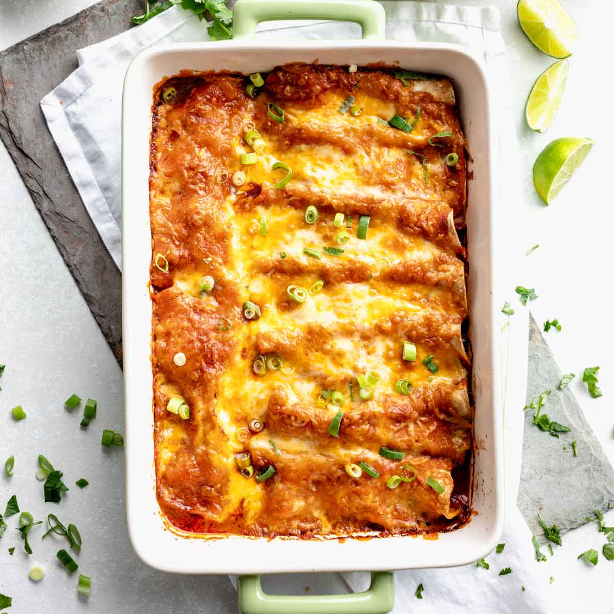
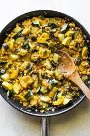
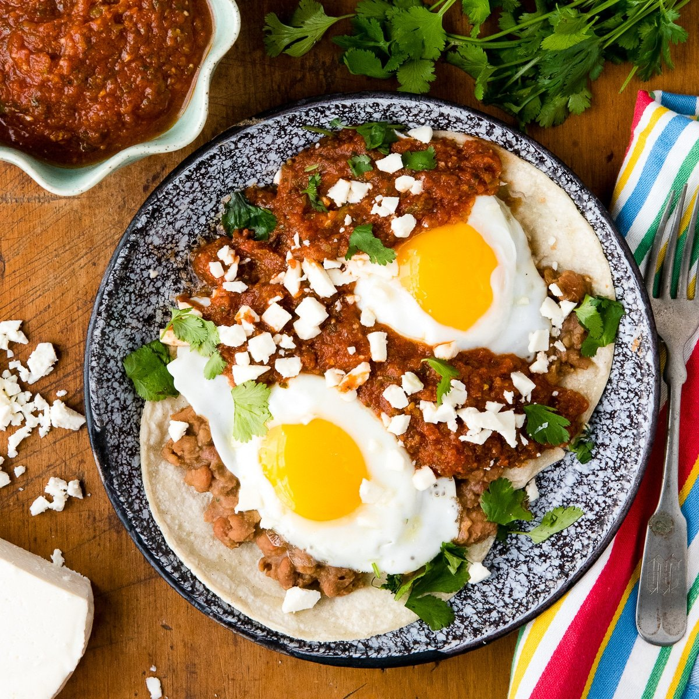
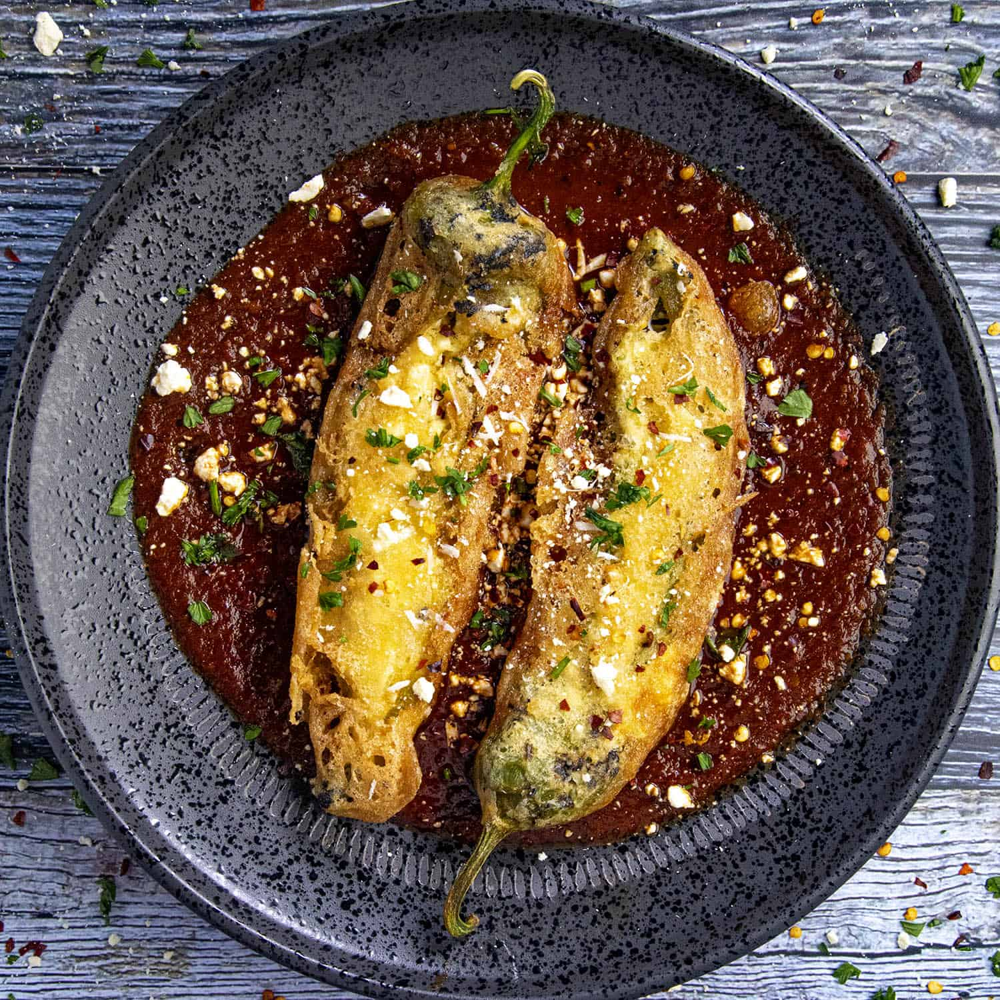

This is a common food item of Mexican consisting
of a tortilla wrapped around a mixed filling of such ingredients as meat usually beef but can be switched out
for other kinds, cheese, beans, and vegetables.

Mexican food that consists of a folded and usually a crispy thin shell that is
filled with meats, cheese, lettuce, and other vegetables. Other ingredients can be added like guacamole and
salsa.
Pozole

Pozole is a type of thick soup that is from Mexico, that contains
ingredients like pork, hominy, chili and garlic.
But can contain other ingredients. The meat can be either pork or chicken.
Chilaquiles

A traditional Mexican dish of fried corn tortillas simmered in a flavourful
sauce, like salsa or mole. Are commonly topped with cheewse and other accompaniments.
Enchiladas

Enchiladas are a Mexican dish which are made from tortillas wrapped around meat
or/and cheese that are cooked in a spicy sauce.
Calabacitas

Calabacitas is a Mexican dish made from zucchini or squash and contains other
ingredients like corn, tomatoes and peppers. This is usually served as a side dish that
Huevos Rancheros

Huevos rancheros is a classic Mexican breakfast dish which is made from fried
eggs that are served on top of a corn tortilla with a salasa dip.
Esquites

Esquites are a Mexican snack dish that is made from corn that is mixed with
mayonnaise, fresh cheese, lime juice and spices.
Chile Relleno

Chile relleno is Mexican stuffed chile pepper full of minced meat and coated
with eggs. Other meat types can be used and also other stuffings like cheese.
« Previous Next » ‹ ›